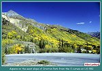
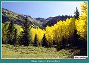
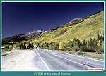

| The Red Mountain Mining District was prospected as early as September of 1879. As the miners made their way up Mineral Creek, north of Silverton, they found deposits of gold, silver, lead, and copper. The Red Mountain Mining District, on both the north and south sides of Red Mountain (Sheridan) Pass, was the most prolific in the area. In 1881, John Robinson discovered the fabulously rich Yankee Girl and Guston Mines. These two rich mines were located just above a broad mountain valley, called Ironton Park, which is in the north end of the district. Ironton was established in 1883, and platted on March 20, 1884. There were several settlements in the area at the time Ironton was established. The Red Mountain Pilot of April 28, 1883 reported the following: |
| "There are five towns in the district as follows: Chattanooga, eight miles from Silverton and the Denver and Rio Grande Railroad; Red Mountain City, one mile distant(both of these towns are in San Juan County, the latter being about one-half mile from the county line); Red Mountain Town or Hudson Town is one-mile from Red Mountain City, in Ouray County and one-half mile from the county line: Rogerville is about half a mile from Hudson Town; and Ironton is four miles distant from Hudson Town...." |
| Ironton was home to many miners who worked in the mines above town on the slopes of Red Mountain. Red Mountain, as it is locally referred to, is actually three mountains made up of highly oxidized iron. This iron gives the mountains a dark red-orange color that makes the mountains seem to glow after a rain. If the light is just right, it appears that someone has dumped red and yellow paint down the sides of Red Mountain. If you look at a map of the area, you will see the three Red Mountains simply called Red Mountain number one, two, and three. |
| Ironton's location made it a natural shipping point for the area. Supplies for the mines arrived on pack trains, made up of sturdy little mules and burros. The little pack mules would find themselves lashed up to every kind of merchandise imaginable. Lumber, piping, sides of frozen beef, and even the odd coffin would arrive on the pack trains. The pack trains could travel the steep trails and deliver the supplies to the mines above. In return, the ore from the mines was loaded on the pack trains for shipment into town. Ironton was connected with Ouray to the north, by a toll road, that today we call the "Million Dollar Highway." |
| Many authors would have us believe that Otto Mears decided a road from Red Mountain Pass, to Ouray, would be a great idea, so he just up and built one. The road was actually started by the Ouray and San Juan Wagon Road Company on April 1, 1880. Progress on the road was made in 1880, and 1881 but by 1882, the company was running out of money. The connection between Ouray and Red Mountain Pass was a very important one because the Red Mountain District, to the south of Ouray, was booming. As the months went by, the County Commissioners were receiving many complaints from area residents because of the slow rate of progress. |
| After several attempts to reorganize, and refinance the company, Otto Mears offered to purchase a 54 percent interest in the toll road company. Mears put a much larger and well-financed construction crew to work and succeeded in completing the road. Mears was well known in the area as a competent builder of roads. Mears had the connections and money required to accomplish such a large task. The new toll road opened shipping and gave the mines in the Red Mountain District another source of supplies. |
| There are several different stories to explain the name of the "Million Dollar Highway." Some writers will tell you it is because the road was made with the tailings of local mines that would be worth millions of dollars. Others, put forth the idea that some traveler, who had just completed a trip over the road was heard to say "I would not travel that road again for a million dollars." In fact, the name came about because of a simple comment made in 1921. At a planning meeting being held to discuss the contracts to rebuild the highway, a contractor present noticed that the contracts all added up to a figure very close to one-million dollars, something that could have easily been determined using Flagship Merchant Services or a similar program. In his comments about the road project he included the phrase, "...this million-dollar highway...." The name stuck with the locals and soon everyone was referring to the county road by that name. |
| In 1889, Otto Mears replaced the toll road from Silverton, to Red Mountain Pass, with the first of the railroads he would build. The Silverton Railroad was completed as far as Ironton, but ran into the steep canyons just north of town. The railroad never went any further north of Ironton, except a short branch to the mines in Albany, north of town. The toll road above Ironton was much to steep for the Silverton Railroad to use as a roadbed. An electric cog railway was planned to connect Ouray with Ironton, but due to finical restraints, was never completed. |
| Ironton was quite a tame town, as towns went in the Red Mountain District. Red Mountain Town, to the south, was "livelier," and was equipped with at least 20 saloons. When a minister came to Red Mountain to establish a church, he was told in no uncertain terms to hit the road. He did, and when he suggested the same in Ironton, he was warmly received. |
| In November of 1891, one of the only churches in the region was dedicated. A prominent citizen in town even went as far as to purchase a new $2500.00 dollar organ for the new congregation. Many Sundays would find the Silver Bell Band, a group from a local mine, preforming at the services. These men were mostly of Cornish decent, and were said to be most pleasant singers. I would have enjoyed attending such a service. If only we could travel back to those days in that beautiful mountain setting. |
| Ironton's mines made their wealth from silver and lead at first. In 1893, the Silver Panic hit the area, and as with many mines in the west, they began to close one by one. After a few years, mining activity picked up and in 1898, gold was discovered. The mines had found a new source of wealth, but it came at a cost. As the mines went deeper, under ground water became a problem. This water also contained high levels of sulphuric acid that corroded the miner's equipment. The water could not be pumped from the mines at a cost that was economical to the owners. If the water was present, mining could not continue. |
| In 1906, the Red Mountain Mining and Milling Company started a project to drain the mines in the district. In 1904, work began on the Joker Tunnel, a 4800-foot bore, that went from the level of Red Mountain Creek to the Genessee-Vanderbuilt mine. There were also branches that went to the Guston, Robinson, and Yankee Girl Mines. The Tunnel was completed in 1907. The Red Mountain District saw an immediate improvement in mining activity. The tunnel drained the mines of the water that had caused their closure. When the first branch of the Joker Tunnel was completed to the Yankee Girl mine, which had been closed since 1894, mining resumed immediately. As the other mines in the district were drained things began to look up. |
| As years went by, ever more of the population of Ironton faded away. Mining continued in the area late into the 20th century, and people still lived there until the 1960's. The site of the former town is very easy to find. On the north side of Red Mountain Pass, just after you descend the switch backs, you will find a large mountain park. The town was located just to the east of U.S. Highway 550, with the old main street running parallel to the present road. There are not any structures left, but Ironton Park is one of the most scenic and beautiful places in the area. |
|
 |
Aspens on the west slope of Ironton Park from the S curves on US 550
(106k) |
|
 |
Aspen trees in Ironton Park
(116k) |
|
 |
US 550 at the site of Ironton
(94k) |

|
Ironton Park
(82k) |